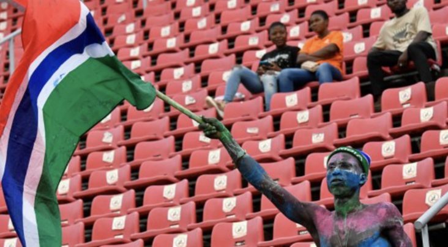
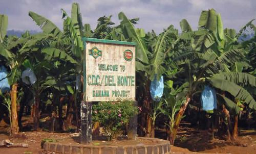

WIND OF CHANGE AS E'TOO ELECTED AS FECAFOOT PRESIDENT
Samuel E'too was elected president of cameroon's federation of football this saturday (11-12-2021)
Samuel E'too, ancient player of Fc Barcelone and Inter milan won president Seidou Mbobo Njoya,
who was elected as fecafoot president in the year 2018, but his election contested
Saturday 11 December 2021 in political capital Yaounde.
Eto’o, record all-time scorer of his country – as well as the Africa Cup of Nations grabbed 43 votes out of 74
A head of today’s much anticipated polls, fellow ex-Indomitable Lions Emmanuel Maboang Kessack,
Jean Crepin Nyamsi and Justin Tagouh withdrew their candidacies to rally behind Eto’o.
Zacharie Wanja and Jules Denis Onana, stood their grounds until elections day before
throwing their towels to Seidou Mbombo Njoya’s
JUBILATION IN THE VOTING HALL
AFTER THE VICTORY
HIGHTLIGHT OF THE MATCH
BETWEEN CAMEROON
AND CAPE-VERD
AFCON IN CAMEROON 2021
WHY STADIUMS STILL REMAINS EMPTY

Cameroonian authorities are taking several measures to boost stadium occupancy rates at the ongoing African Cup of Nations the country is hosting.
In the West, elites, and officials are hard at work to make sure fans are going to stadiums to watch matches,
especially Day 2 matches of group B this Friday, January 14 at the Kouekong Stadium in Bafoussam.
On Thursday, January 13, Awa Fonka Augustine, Governor of the Western region, urged heads of the public service
parastatal and private entities in his administrative district to allow their staff to go home by noon so that they can go to stadiums
to watch the Senegal-Guinea and Malawi-Zimbabwe matches scheduled respectively at 14h and 17h
URGENT!!!

Eight plantation workers of the Cameroon Development Corporation,(CDC)
have been abducted by men believed to be separatist fighters
They were kidnapped last Thursday on the Tiko-Douala road in the South West region,
by armed men as the went about their business in the plantation of this the
In fact, it was difficult to know in which direction they were led,even less where
they are held captive, if indeed they are stil alive.And on the identity of the kidnappers
it is difficult to know.But in all likelihood, it will alleged, separatist militiamen,
who have constantly be use to this type of packages
The kidnapping of eight workers sowed a climate of panic within the agro-industrial company.
The kidnapping comes as a result of this company reputed to be Cammeroon's second largest,
after the state, with its 18,239 employees in 2019, is facing the worst crisis ever experienced.
The financial losses due to bloody conflicts that have the two English speaking regions since
2016 amount to billions of FCFA francs.The employees, for their part, totaly nearly a year of salary
Former Erlanger
Chief Administrastive
Officer and Chief of Police
Start improving yourself from today!
Work real hard.
HTML is a markup language.
There are lots of speling mistake in thes line.
The <small> tag is used to make text smaller.
HTML is used to create webpages.
Useless code (function useless() { }) have been removed in newerverion.
Plastic use for bags.
Use biodegradable substances for carrying bags.
mark tag is used to highlight a text.
Mailto: John smith
Phone: 1234567890
Twitter: 🐦@example_john
Image of a catImage of a cat
The most important languages to learn for web development are HTML, CSS, and JavaScript.